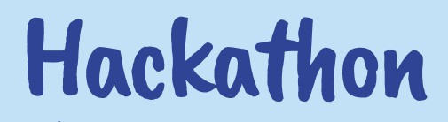
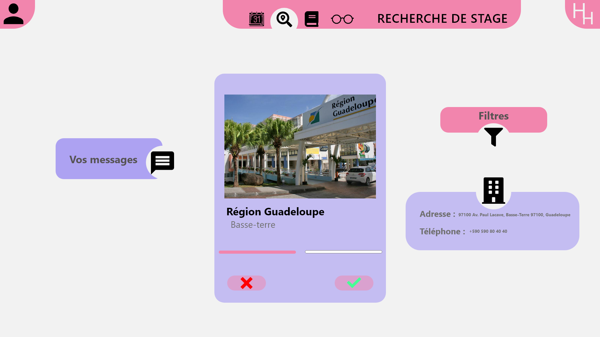
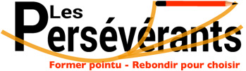
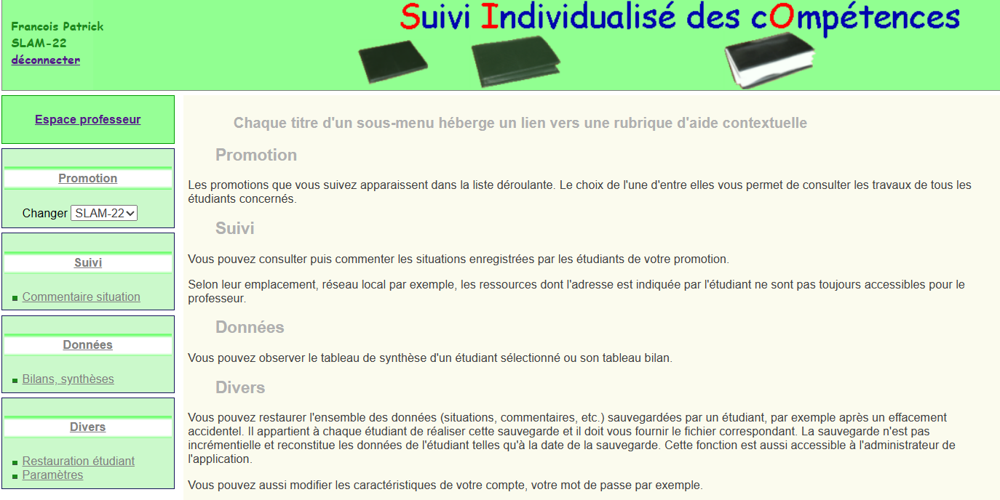
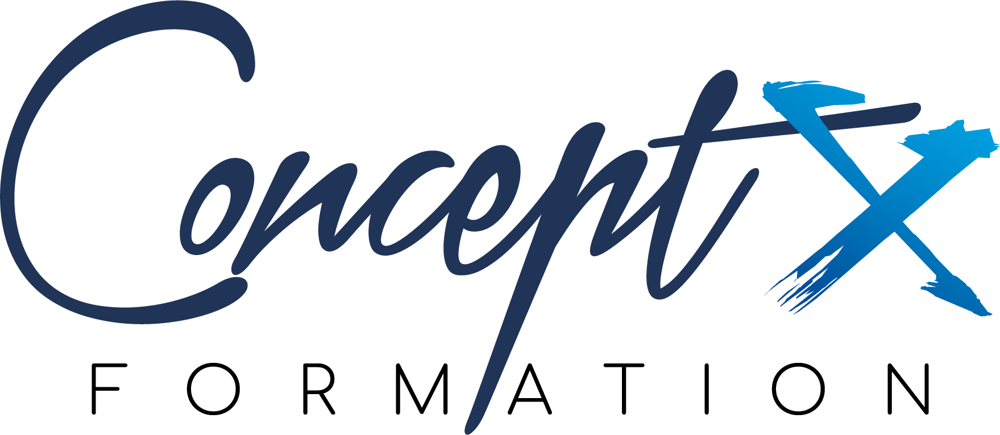

Projet destinée aux employés d'une entreprise fictive,
leurs permettants d'aider leurs collègues,
dans un cadre de covoiturage, pour ceux qui ont des soucis
Projet école de musique
cadre scolaire
Le projet consiste à moderniser les outils informatiques
de l'école de musique municipale de la ville de D.(fictif),
qui sont actuellement jugés peu efficaces.
Pour cela, une étude est menée par la DSI de la mairie.
En tant que salarié-e de la DSI, il faut participer à cette étude et
aux différentes missions qui la composent,
dans le but de proposer des solutions adaptées à l'école de musique
pour une meilleure gestion de ses activités.
Projets hackatons
cadre personnel


J'ai eu l'opportunité de participer à un hackathon organisé à Sainte-Rose,
au cours où j'ai pu amasser une précieuse expérience et rencontrer des professionnels dans le domaine.
Au sein de mon groupe, nous avons eu pour mission de proposer un prototype innovant destiné à aider les étudiants.
Ce challenge m'a permis de développer mes compétences en travail d'équipe,
en communication et en créativité,
tout en me donnant l'occasion de réfléchir à des solutions concrètes pour résoudre des problématiques actuelles.
Stage école
cadre professionnelle


Durant ma deuxième année de BTS, j'ai réalisé un stage d'un mois au
cours auquel j'ai été chargé de migrer un site de suivi individualisé
d'élèves de PHP 5 à PHP 8.
La migration de ce projet de PHP 5 vers PHP 8 m'a permis de développer
mes compétences en programmation et de mieux comprendre les enjeux
de la mise à jour des technologies ainsi augmentant ma sensibilité
à la veille technologique.
Stage centre de formation
cadre professionnelle

Le stage que j'ai réalisé à ma première année de BTS m'a permis de
découvrir le monde professionnel et d'acquérir des compétences techniques en développement web.
Travaillant au sein de Concept X Formation(basse-terre), j'ai apporter mon aide en
PHP, HTML et CSS pour aider les nouveaux arrivants à utiliser efficacement leur intranet.
Permettant aussi de dévelloppé mes compétences en pédagogie,
en expliquant de manière claire et concise les fonctionnalités de l'intranet
aux nouveaux utilisateurs.